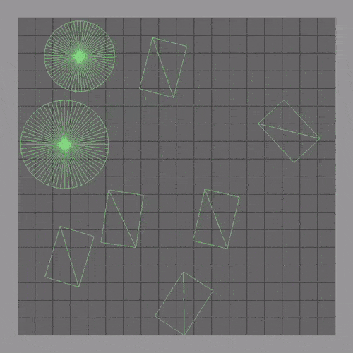

Home page of Nuno Das Neves
Some stuff that's on my Github:
- sdl game starter: C/C++ platform layer for making games with SDL on Windows or Linux - based on code from Handmade Hero
- rigid body sim: 2D rigid body simulator made with sdl game starter
 - interactive algorithms: A visualization of convolutional codes and the Viterbi algorithm (and Google pagerank, kinda)
- slp to mp4: Convert Super Smash Bros Melee replays (recorded with Project Slippi) to video